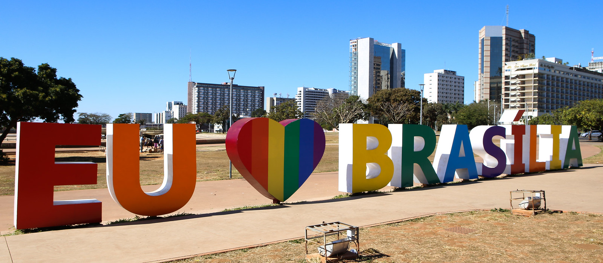

Aprenda Porcentagem e Conheça a sua Cidade
Você sabia que porcentagem está em todo lugar?
Usada nas promoções das lojas, em pesquisas eleitorais e até na criação de obras artísticas e na arquitetura, a porcentagem é muito útil desde a antiguidade, quando cálculos proporcionais eram necessários para dividir terras, calcular impostos ou medir trocas comerciais. O conceito de porcentagem começou a ser formalizado na Europa por volta da Idade Média, impulsionado pelo comércio para calcular taxas e lucros.
Hoje, as porcentagens são ensinadas desde cedo e utilizadas globalmente como um elemento básico da matemática. Elas são fundamentais para simplificar a compreensão de proporções e facilitar comparações. Seu uso está presente em praticamente todos os aspectos do cotidiano, tornando-se indispensável para a sociedade.
E para aprender a usar essa ferramenta poderosa, utilizaremos dados ambientais reais da nossa capital, Brasília. Assim, além de estudar um conceito matemático tão importante, você conhecerá um pouco mais sobre sua cidade e seu contexto ecológico. Vamos lá?